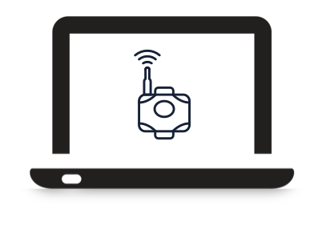
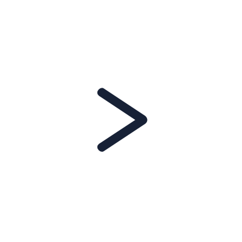
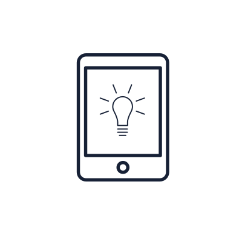

Murano Quickstarts Overview
Quickstarts are example templates to help you quickly create Products and Solutions on Murano. This includes everything you need to set up a Product, connect a simulated device, interact with device data on a custom dashboard, and deploy a fully customizable front-end web application Solution. When finished, you will have a complete end-to-end IoT application deployed on Exosite’s Murano platform.
Create a Product
In this section, you will create a connected lightbulb from the provided example templates. Choose an example template below based on whether you will use software-simulated devices or manual API commands.
At the end of each quickstart, you should have a simulated device representing a connected lightbulb that is:
Connected to the Murano platform
Reporting sensor data
Remotely controllable
| Murano Products - Quickstart Example Templates | |
|---|---|
|  | Simulate a Connected Lightbulb Using a Python Script |
|  | Manually Activate and Write Data using API Commands |
Create a Solution
In this section, you will clone and deploy an example consumer application for the connected lightbulb you created in the previous section. The example consumer application templates below provide all the source code and configuration necessary to complete this task.
At the end of this quickstart, you should have a deployed web application that has:
Unique user signup and login
Ability for users to claim ownership of devices
Ability for users to see device sensor data and turn the lightbulb on/off
Ability for users to invite a shared user to access the lightbulb
| Murano Solution - Quickstart Example Templates | |
|---|---|
|  | Create a Murano Solution Application |